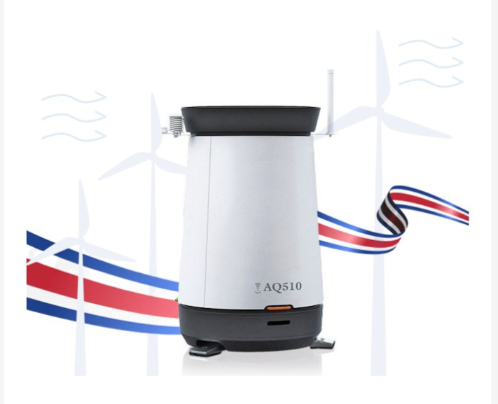

Descubra el SODAR AQ510. La alternativa remota, autónoma y comprobada a las torres de medición tradicionales en América Latina.
Solicitar Información
Dos unidades están funcionando como sistemas principales de medición en el Parque Eólico Chiripa, validando su precisión y confiabilidad en condiciones reales.
Como representantes oficiales de AQSystem en Costa Rica, desde EDSAWIND acompañamos a nuestros clientes en el desarrollo y optimización de sus parques eólicos con la tecnología más avanzada del mercado.
|
AQSystem
A diferencia de las torres meteorológicas que requieren obras civiles complejas, cimentaciones profundas y permisos extensos, el SODAR AQ510 se despliega y calibra a nivel de suelo.
Sensor remoto acústico. Mide perfiles de viento hasta 300m de altura. El dispositivo solo mide 1.8m a nivel del suelo.
Operación continua. NO se ve afectado por condiciones climáticas extremas.
Mantenimiento a nivel de suelo (Bajo Costo). Diagnóstico remoto con alertas automáticas. Sin riesgo humano.
Anemómetro físico. Limitado a 80-120m (muy difícil y costoso escalar a mayor altura).
Se ve afectado por clima extremo (rayos, hielo, ráfagas). Requiere clima favorable para operar y reparar.
Mantenimiento alto y costoso (corrosión, instalación). Alto riesgo humano al requerir escalada y desplazamiento físico.
Complete el formulario para recibir asesoría sobre la compra, instalación o estudios de factibilidad con sistemas SODAR AQ510.